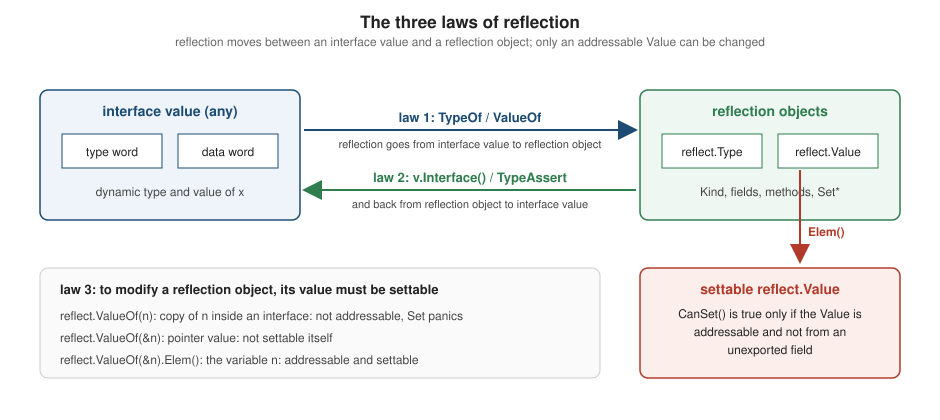

Reflection
|
This content was generated with the assistance of AI and should be verified against the official documentation before being relied on in production. |
This page is written against Go 1.27 (go1.27.2), checked on 2026-10-18; every go.mod shown has the line go 1.27.
Reflection is a program’s ability to examine and modify its own structure at run time: to ask what type a value
has, to list the fields of a struct and read their tags, to find a method by name and call it, or to build a value of
a type that was not known when the program was compiled. In Go it lives in the reflect package, and it is what
makes fmt.Printf("%v"), encoding/json, text/template, database/sql scanning and sort.Slice possible. Almost
all application code should not need it: the rest of the language is designed so that the compiler knows the types.
This page explains the model (the three laws of reflection), the API you actually use, two complete examples (a CSV
encoder and a validator that read struct tags), the panics and traps, what reflection costs, and when generics or code
generation are the better tool.
It builds on Interfaces (a reflection object is made from the two words of an interface value), Types and Values, Structs and Embedding (fields, tags and promoted fields) and Methods and Receivers (method sets decide what reflection can see). Related pages are Generics, encoding/json (the best-known reflection client), Text and HTML Templates, Directives, Code Generation and Embedding (the alternative to reflection), unsafe and Low-Level Programming, Testing and Error Handling. Other languages show the same feature with a different philosophy: see Java annotations and reflection, C# attributes and reflection, Kotlin annotations and reflection, Swift type casting and reflection, PHP reflection and Scala reflection with quotes.reflect. Rust has no run-time reflection at all and uses macros instead (see the comparison below).
Every example was compiled, vetted with go vet and run with Go 1.27.2; the output shown is the real output (compiler,
vet and panic messages are copied from real runs). The one table of numbers (the benchmarks) is machine-specific. The
go.mod of the example module is:
module example.com/shelf
go 1.27Examples that use the shelf domain import example.com/shelf/catalog: catalog.Book (an ISBN, a title and
authors), catalog.ISBN (a validated defined type with a String method) and catalog.LoanState (an iota
enumeration with a String method). Examples that need many tagged fields declare their own small Book type in
package main, so each listing is complete.
Why reflection exists
Go is statically typed: the compiler knows the type of every expression, and for most code that is all you need. A function that must work on values of any type has three tools:
-
an interface with the methods it needs (
io.Reader,fmt.Stringer,sort.Interface), when the types can share a behaviour; -
generics, when the code is the same for every type and only the type changes (a
MaporMaxfunction, a container); and -
reflection, when the code must look at the shape of a value it knows nothing about at compile time: which fields a struct has, what their tags say, whether a type has a method named
Validate.
The third case is real: encoding/json cannot ask a catalog.Book for a ToJSON method, because Book was written
by someone who has never heard of it. It uses the reflect package to walk the fields, read their json:"…" tags and
set them. Reflection is therefore the mechanism behind every declarative, tag-driven library in Go: JSON, XML, CSV, ORMs,
validators, command-line flag binders, dependency-injection containers and template engines.
Reflection is built on the interface representation (see Interfaces).
An interface value is a pair: a pointer to the dynamic type descriptor and a pointer to (or a copy of) the data. The
function reflect.TypeOf and reflect.ValueOf just take that pair apart into two objects, and Value.Interface
puts it back together. That is the whole idea, and it is what the three laws below say.

Type, Kind and Value
reflect.TypeOf(x) returns a reflect.Type, an interface describing a Go type, and reflect.ValueOf(x) returns a
reflect.Value, a struct that holds a copy of the value together with its type and some flags. Both take an any, so
the argument is first converted to an interface value, which is why a reflection object describes the dynamic type
of its argument and never the static type of the variable.
The Kind of a type is the underlying category: reflect.Int, reflect.String, reflect.Slice, reflect.Map,
reflect.Struct, reflect.Pointer (named Ptr before Go 1.18), reflect.Func, reflect.Interface and so on. It is
different from the type itself: catalog.LoanState and int have different types and the same kind. Use Kind to
decide how to handle a value (which Value getter to call) and Type to decide what it is (name, package,
methods).
package main
import (
"fmt"
"reflect"
"example.com/shelf/catalog"
)
func main() {
b := catalog.Book{ISBN: "9780134190440", Title: "The Go Programming Language"}
vals := []any{42, "go", 3.5, []int{1}, map[string]int{}, &b, b, catalog.OnLoan, catalog.ISBN("9780134190440"), nil}
for _, v := range vals {
t := reflect.TypeOf(v)
if t == nil {
fmt.Printf("%-14v -> TypeOf returned a nil Type\n", v)
continue
}
fmt.Printf("%-24s kind=%-9s name=%q pkg=%q\n", t, t.Kind(), t.Name(), t.PkgPath())
}
t := reflect.TypeFor[catalog.Book]()
fmt.Println(t.Size() > 0, t.NumField(), t.Field(1).Name, t.Field(1).Type)
fmt.Println(reflect.ValueOf(nil).IsValid(), reflect.ValueOf(b).Kind(), reflect.ValueOf(&b).Elem().Kind())
}Output:
int kind=int name="int" pkg=""
string kind=string name="string" pkg=""
float64 kind=float64 name="float64" pkg=""
[]int kind=slice name="" pkg=""
map[string]int kind=map name="" pkg=""
*catalog.Book kind=ptr name="" pkg=""
catalog.Book kind=struct name="Book" pkg="example.com/shelf/catalog"
catalog.LoanState kind=int name="LoanState" pkg="example.com/shelf/catalog"
catalog.ISBN kind=string name="ISBN" pkg="example.com/shelf/catalog"
<nil> -> TypeOf returned a nil Type
true 3 Title string
false struct structThe output shows the points that trip people up:
-
Unnamed types have an empty
Name.[]int,map[string]intand*catalog.Bookare type literals; only defined types (catalog.Book,catalog.LoanState,catalog.ISBN) and the predeclared types have names.PkgPathis empty for predeclared types. -
A pointer is its own kind.
*catalog.Bookhas kindptr(theStringofreflect.Pointer); the struct it points to is reached withType.Elem()orValue.Elem(). -
TypeOf(nil)is a nilType. A nil interface has no dynamic type, soTypeOfreturns nil and calling a method on it panics.ValueOf(nil)returns the zeroValue, for whichIsValid()is false; most methods on it panic. -
TypeFor[T]()(Go 1.22) returns theTypeofTwithout needing a value:reflect.TypeFor[catalog.Book]()andreflect.TypeFor[error]()are the short forms ofreflect.TypeOf(catalog.Book{})and the older idiomreflect.TypeOf((*error)(nil)).Elem(). It also works for interface types, where there is no value to pass toTypeOf.
The Type interface
reflect.Type is an interface with about thirty methods. Some are valid for every type, others only for some kinds and
panic otherwise (for example NumField on a non-struct, as one of the examples below shows). A selection:
| Method | Meaning |
|---|---|
|
The type name (empty for unnamed types), the import path of the package that defines it, and the printed form such
as |
|
The category ( |
|
The size and alignment in bytes (see unsafe and Low-Level Programming and Structs and Embedding). |
|
The element type of a pointer, slice, array, channel or map (the value type of a map). |
|
The key type of a map; the length of an array type. |
|
Struct fields, as |
|
The exported methods in the method set of the type ( |
|
The parameters and results of a function type ( |
|
Relationships between types; |
|
Whether |
|
Whether |
Two types are identical if and only if their reflect.Type values compare equal with ==, so a Type can be used as
a map key (the cache below does exactly that).
The Value type
A reflect.Value is a small struct (a type pointer, a data pointer and flag bits), always passed by value. It has typed
getters that match the kind: Int, Uint, Float, Complex, Bool, String, Bytes, Len, Index, MapIndex,
MapKeys/MapRange, Field, Elem, IsNil, IsZero, IsValid. A getter that does not match the kind panics:
reflect.ValueOf("x").Int() panics, whereas .String() is special and returns something like <int Value> for
non-strings instead of panicking, so it is safe in logging. For a type whose underlying kind is int, Int() works even
when the Go type is a defined type such as catalog.LoanState.
The three laws of reflection
Rob Pike’s blog post The Laws of Reflection states the model in three sentences. The example below walks through each of them in code.
-
Reflection goes from interface value to reflection object.
TypeOfandValueOftake an interface value (so any value, after conversion) and return its type and value. The dynamic type of afmt.Stringerholding acatalog.LoanStateiscatalog.LoanState, notfmt.Stringer. -
Reflection goes from reflection object to interface value.
Value.Interface()is the inverse ofValueOf: it returns ananyholding the same dynamic type and value, which you can type-assert back to the concrete type. -
To modify a reflection object, the value must be settable. A
Valueis settable only if it is addressable (it refers to a variable, not to a copy) and was not obtained through an unexported field.reflect.ValueOf(n)holds a copy ofn, so changing it could never changen, and the package refuses;reflect.ValueOf(&n).Elem()is the variablenitself.
package main
import (
"fmt"
"reflect"
"example.com/shelf/catalog"
)
func main() {
// Law 1: interface value -> reflection object.
var s fmt.Stringer = catalog.OnLoan
v := reflect.ValueOf(s)
fmt.Println("static type fmt.Stringer, dynamic type:", v.Type(), "kind:", v.Kind())
// Law 2: reflection object -> interface value.
back := v.Interface().(catalog.LoanState)
fmt.Println("round trip:", back, int(back))
// Law 3: to modify a reflection object, the value must be settable.
n := 7
fmt.Println("ValueOf(n).CanSet(): ", reflect.ValueOf(n).CanSet())
p := reflect.ValueOf(&n)
fmt.Println("ValueOf(&n).CanSet(): ", p.CanSet())
e := p.Elem()
fmt.Println("ValueOf(&n).Elem().CanSet():", e.CanSet(), e.CanAddr())
e.SetInt(42)
fmt.Println("n after SetInt:", n)
// Settability is a property of the Value, not of the variable.
func() {
defer func() { fmt.Println("recovered:", recover()) }()
reflect.ValueOf(n).SetInt(1)
}()
func() {
defer func() { fmt.Println("recovered:", recover()) }()
e.SetString("x")
}()
}Output:
static type fmt.Stringer, dynamic type: catalog.LoanState kind: int
round trip: on loan 1
ValueOf(n).CanSet(): false
ValueOf(&n).CanSet(): false
ValueOf(&n).Elem().CanSet(): true true
n after SetInt: 42
recovered: reflect: reflect.Value.SetInt using unaddressable value
recovered: reflect: call of reflect.Value.SetString on int ValueThings to remember from the example:
-
CanSetis a property of theValue, not of the variable. The same variablenyields a non-settableValuethroughValueOf(n)and a settable one throughValueOf(&n).Elem(). -
CanAddrreports whetherValue.Addr()may be called; settable implies addressable, but an addressable field reached through an unexported name is still not settable. -
SetInton aValueof kindstringpanics with a message that names the method and the kind, as doesSetwith a value of the wrong type. Reflection moves type checking from compile time to run time, so every misuse becomes a panic, not a compile error. -
The pointer idiom
reflect.ValueOf(&x).Elem()is the only way to get a settable value out of a variable. Passing a non-pointer to a function that is going to fill in a value (asjson.UnmarshalandScando) is a programming error, and well-behaved libraries report it (json: Unmarshal(non-pointer main.Book)) before touching anything.
Inspecting structs and struct tags
Tags are the reason most people meet reflection. A struct tag is a string literal after a field’s type, conventionally
a space-separated list of key:"value" pairs. The compiler ignores it; reflect.StructTag parses it:
Tag.Get(key) returns the value (empty if the key is absent) and Tag.Lookup(key) additionally says whether the key
was present, which lets code tell csv:"" from no tag at all. See
Structs and Embedding for the language rules on tags and
embedding.
The reflect.StructField returned by Type.Field(i) carries the Name, the Type, the Tag, the byte Offset, the
Index sequence (a path, because fields can be promoted through embedded structs) and the Anonymous flag for embedded
fields. StructField.IsExported() (Go 1.17) is the right test for an exported field (the older PkgPath == "" check
works but is obscure).
package main
import (
"fmt"
"reflect"
)
type Audit struct {
CreatedBy string `csv:"created_by"`
}
type Book struct {
Audit
ISBN string `csv:"isbn" validate:"required,len=13"`
Title string `csv:"title" validate:"required"`
Pages int `csv:"pages,omitempty"`
Tags []string `csv:"-"`
internal int
}
func main() {
t := reflect.TypeFor[Book]()
fmt.Println("Type.Fields (Go 1.26):")
for f := range t.Fields() {
fmt.Printf(" #%v %-8s %-10s anon=%-5v exported=%-5v tag=%q\n",
f.Index, f.Name, f.Type, f.Anonymous, f.IsExported(), f.Tag)
}
fmt.Println("VisibleFields (includes promoted fields):")
for _, f := range reflect.VisibleFields(t) {
fmt.Printf(" %v %s\n", f.Index, f.Name)
}
f, _ := t.FieldByName("CreatedBy")
fmt.Println("FieldByName promoted:", f.Index, f.Tag.Get("csv"))
f, _ = t.FieldByName("ISBN")
v, ok := f.Tag.Lookup("validate")
fmt.Printf("Lookup validate: %q %v\n", v, ok)
_, ok = f.Tag.Lookup("json")
fmt.Println("Lookup json present:", ok)
b := Book{Audit: Audit{"ana"}, ISBN: "9780134190440", Title: "The Go Programming Language", internal: 3}
rv := reflect.ValueOf(b)
fmt.Println("Value.Fields (Go 1.26):")
for sf, fv := range rv.Fields() {
if !sf.IsExported() {
fmt.Printf(" %-8s CanInterface=%v (value hidden)\n", sf.Name, fv.CanInterface())
continue
}
fmt.Printf(" %-8s %v\n", sf.Name, fv)
}
func() {
defer func() { fmt.Println("recovered:", recover()) }()
_ = rv.FieldByName("internal").Interface()
}()
func() {
defer func() { fmt.Println("recovered:", recover()) }()
reflect.TypeFor[int]().NumField()
}()
}Output:
Type.Fields (Go 1.26):
#[0] Audit main.Audit anon=true exported=true tag=""
#[1] ISBN string anon=false exported=true tag="csv:\"isbn\" validate:\"required,len=13\""
#[2] Title string anon=false exported=true tag="csv:\"title\" validate:\"required\""
#[3] Pages int anon=false exported=true tag="csv:\"pages,omitempty\""
#[4] Tags []string anon=false exported=true tag="csv:\"-\""
#[5] internal int anon=false exported=false tag=""
VisibleFields (includes promoted fields):
[0] Audit
[0 0] CreatedBy
[1] ISBN
[2] Title
[3] Pages
[4] Tags
[5] internal
FieldByName promoted: [0 0] created_by
Lookup validate: "required,len=13" true
Lookup json present: false
Value.Fields (Go 1.26):
Audit {ana}
ISBN 9780134190440
Title The Go Programming Language
Pages 0
Tags []
internal CanInterface=false (value hidden)
recovered: reflect.Value.Interface: cannot return value obtained from unexported field or method
recovered: reflect: NumField of non-struct type intWhat the example shows:
-
Type.Fields()andValue.Fields()(Go 1.26) are iterators (iter.Seqanditer.Seq2, see Iterators and range-over-func) that replace thefor i := range t.NumField()loop;Value.Fieldsyields eachStructFieldtogether with itsValue. -
Embedded structs appear as one field.
Type.FieldandFieldslist the embeddedAuditas a single anonymous field; its fields (CreatedBy) are promoted and only reachable throughVisibleFields(Go 1.17), which flattens the embedding and reports anIndexpath such as[0 0], orFieldByName, which also follows promotion. -
Unexported fields are visible but opaque. Reflection lists
internal, butCanInterface()is false for it, and callingInterface()panics (the message is in the output). It can be read withInt(),String()and the other typed getters but never set (CanSetis false). This is what makesencoding/jsonignore lowercase fields without special code, and it is why a struct that must be filled by a library needs exported fields. The old trick of combining reflection with theunsafepackage to write to an unexported field is not supported behaviour (see unsafe and Low-Level Programming). -
Tag syntax is strict. The convention is
key:"value"with no space after the colon. A malformed tag does not produce a compile error;Getsimply returns the empty string.go vethas astructtagcheck that finds it:
package main
import (
"fmt"
"reflect"
)
type Book struct {
ISBN string `csv: "isbn"`
Title string `csv:"title"`
}
func main() {
f, _ := reflect.TypeFor[Book]().FieldByName("ISBN")
fmt.Printf("%q %q\n", f.Tag.Get("csv"), f.Tag)
}Output of go vet, then of go run:
e13/main.go:9:2: struct field tag `csv: "isbn"` not compatible with reflect.StructTag.Get: bad syntax for struct tag value
"" "csv: \"isbn\""Source: go vet: structtag
This is why a tag typo (a space, a missing quote, two keys joined by a comma) silently disables a feature unless the
package is vetted. Run go vet ./... in CI (see Formatting, vet, fix and Static Analysis).
Calling methods
A reflect.Value can find and call methods. Value.MethodByName(name) returns a bound method value (the receiver is
already attached), Value.NumMethod and Value.Method(i) list them in sorted name order, and Call takes a slice of
argument Value`s and returns a slice of result `Value`s. `Value.Methods() (Go 1.26) iterates over the Method
description and the bound Value together.
Which methods are visible depends on the method set of the type you start from (see
Methods and Receivers): only exported methods, and the
method set of Member does not include methods declared with the receiver *Member, while the method set of *Member
includes both.
package main
import (
"fmt"
"reflect"
"strings"
)
type Member struct {
Name string
loans int
}
func (m Member) Greeting(prefix string) string { return prefix + ", " + m.Name }
func (m *Member) Borrow(n int) (int, error) {
if n <= 0 {
return m.loans, fmt.Errorf("borrow %d: must be positive", n)
}
m.loans += n
return m.loans, nil
}
func (m Member) hidden() {}
func main() {
m := &Member{Name: "Ana"}
fmt.Println("method set of Member (value):")
for meth := range reflect.TypeFor[Member]().Methods() {
fmt.Printf(" %s %s\n", meth.Name, meth.Type)
}
fmt.Println("method set of *Member:")
for meth := range reflect.TypeFor[*Member]().Methods() {
fmt.Printf(" %s %s\n", meth.Name, meth.Type)
}
// Call through a bound method value: the receiver is already attached.
g := reflect.ValueOf(m).MethodByName("Greeting")
out := g.Call([]reflect.Value{reflect.ValueOf("Hello")})
fmt.Println(out[0])
// Multiple results come back as a slice; the error is the last element.
borrow := reflect.ValueOf(m).MethodByName("Borrow")
for _, n := range []int{2, 0} {
res := borrow.Call([]reflect.Value{reflect.ValueOf(n)})
if err, _ := res[1].Interface().(error); err != nil {
fmt.Println("error:", err)
continue
}
fmt.Println("loans:", res[0].Int())
}
// Unexported methods are invisible; a missing name gives the zero Value.
fmt.Println("hidden valid:", reflect.ValueOf(m).MethodByName("hidden").IsValid())
// Bound methods via the iterator (Go 1.26).
for meth, mv := range reflect.ValueOf(m).Methods() {
if strings.HasPrefix(meth.Name, "G") {
fmt.Println(meth.Name, "takes", mv.Type().NumIn(), "arg(s)")
}
}
func() {
defer func() { fmt.Println("recovered:", recover()) }()
g.Call(nil)
}()
func() {
defer func() { fmt.Println("recovered:", recover()) }()
g.Call([]reflect.Value{reflect.ValueOf(1)})
}()
func() {
defer func() { fmt.Println("recovered:", recover()) }()
reflect.ValueOf(Member{}).MethodByName("Nope").Call(nil)
}()
}Output:
method set of Member (value):
Greeting func(main.Member, string) string
method set of *Member:
Borrow func(*main.Member, int) (int, error)
Greeting func(*main.Member, string) string
Hello, Ana
loans: 2
error: borrow 0: must be positive
hidden valid: false
Greeting takes 1 arg(s)
recovered: reflect: Call with too few input arguments
recovered: reflect: Call using int as type string
recovered: reflect: call of reflect.Value.Call on zero ValuePoints to notice:
-
The method set matters.
Borrowhas a pointer receiver, so it appears only for*Member. Reflecting on aMembervalue and looking forBorrowfinds nothing. This is the same rule as for interface satisfaction. -
Unexported methods are invisible, so
MethodByName("hidden")returns the zeroValue. Always checkIsValid()before calling. -
Calling checks arguments at run time. The wrong number or type of arguments panics, as does calling the zero
Value. UseType.NumIn/In(or theInsiterator) to validate beforeCall. -
Errors come back as the last
Value. Extract it withres[1].Interface().(error); the comma-ok form handles thenilinterface, whichInterface()returns as an untyped nil. -
Method(i).Typeof aTypehas the receiver as first parameter (func(main.Member, string) string), while a boundValue.Method(i)has not.Type.Method(i).Funcis the unbound function and needs the receiver passed inCall.
Value.Call is also how reflection-based frameworks invoke handlers, whether a test runner finds TestXxx methods in
some other language or a template engine calls {{.Greeting "Hello"}} (see
Text and HTML Templates). Go’s own testing package does
not use reflection for this: go test generates a main that lists the test functions by name.
Types as values: TypeFor, Implements, TypeAssert and building values
Because a reflect.Type is a value, code can compare it, store it in a map, test it against another type and construct
new values from it.
package main
import (
"errors"
"fmt"
"io"
"reflect"
"example.com/shelf/catalog"
)
func main() {
// TypeFor works for interface types, where TypeOf would need a pointer trick.
errType := reflect.TypeFor[error]()
stringerType := reflect.TypeFor[fmt.Stringer]()
old := reflect.TypeOf((*error)(nil)).Elem()
fmt.Println(errType, errType == old, errType.Kind())
isbnT := reflect.TypeFor[catalog.ISBN]()
fmt.Println("ISBN implements Stringer:", isbnT.Implements(stringerType))
fmt.Println("ISBN implements error: ", isbnT.Implements(errType))
fmt.Println("string convertible to ISBN:", reflect.TypeFor[string]().ConvertibleTo(isbnT))
fmt.Println("string assignable to ISBN: ", reflect.TypeFor[string]().AssignableTo(isbnT))
// TypeAssert (Go 1.25) is v.Interface().(T) without the boxing allocation.
v := reflect.ValueOf(catalog.ISBN("9780134190440"))
if s, ok := reflect.TypeAssert[fmt.Stringer](v); ok {
fmt.Println("TypeAssert Stringer:", s.String())
}
if _, ok := reflect.TypeAssert[io.Reader](v); !ok {
fmt.Println("TypeAssert io.Reader: not satisfied")
}
n, ok := reflect.TypeAssert[int](reflect.ValueOf(42))
fmt.Println("TypeAssert int:", n, ok)
// Type-directed dispatch on a field of unknown type.
for _, x := range []any{errors.New("boom"), catalog.OnLoan, 3} {
rv := reflect.ValueOf(x)
switch {
case rv.Type().Implements(errType):
fmt.Println("an error:", x)
case rv.Type().Implements(stringerType):
fmt.Println("a Stringer:", x)
default:
fmt.Println("plain", rv.Kind())
}
}
// Building values: New, MakeSlice, MakeMap, Append, SetMapIndex.
bookT := reflect.TypeFor[catalog.Book]()
pb := reflect.New(bookT) // *catalog.Book, addressable via Elem
pb.Elem().FieldByName("Title").SetString("Dune")
pb.Elem().FieldByName("ISBN").SetString("9780441013593")
books := reflect.MakeSlice(reflect.SliceOf(bookT), 0, 2)
books = reflect.Append(books, pb.Elem())
index := reflect.MakeMap(reflect.MapOf(reflect.TypeFor[string](), reflect.SliceOf(bookT)))
index.SetMapIndex(reflect.ValueOf("sf"), books)
fmt.Printf("%v\n", index.Interface())
fmt.Println(index.Type(), books.Len())
// Iterators over reflected collections (Go 1.23).
for i, e := range books.Seq2() {
fmt.Println(i, e.FieldByName("Title"))
}
for k, v := range index.Seq2() {
fmt.Println(k, v.Len())
}
}Output:
error true interface
ISBN implements Stringer: true
ISBN implements error: false
string convertible to ISBN: true
string assignable to ISBN: false
TypeAssert Stringer: 9780134190440
TypeAssert io.Reader: not satisfied
TypeAssert int: 42 true
an error: boom
a Stringer: on loan
plain int
map[sf:[{9780441013593 Dune []}]]
map[string][]catalog.Book 1
0 Dune
sf 1-
TypeFor[T]()(Go 1.22) is the generic constructor of aType. It is exactly equivalent to the old double-conversion idiom for interface types, and it is easier to read for every type. -
Implements,AssignableToandConvertibleTomirror the three relations of the language.Implementsrequires an interface type as its argument and panics otherwise. The example shows thatcatalog.ISBNimplementsfmt.Stringerbut noterror, and that astringis convertible toISBN(an explicit conversion) but not assignable (an implicit one), exactly as in source code. -
TypeAssert[T](v)(Go 1.25) isv.Interface().(T)without the allocation that boxing a non-pointer value into an interface costs; it returns(T, bool)and also works for interface typesT. Prefer it in new code, and see the benchmarks below. -
Type-directed dispatch on a value of unknown type is a
switchoverKindor a chain ofImplementstests, in that order: check the specific behaviour (error,Stringer) before the generic category. -
Building values.
reflect.New(t)isnew(T)and returns a pointerValue(useElem()to set fields);MakeSlice,MakeMap,MakeChanandAppendconstruct containers;SetMapIndex,SetLen,Index(i).Setfill them.Zero(t)returns aValueholding the zero value (not settable) andValue.SetZero()(Go 1.20) resets a settable one. -
Ranging over collections.
Value.Seq()andValue.Seq2()(Go 1.23) are iterators over a slice, array, string, map, channel, integer or range-over-func function; the example usesSeq2on the slice and on the map.
Constructing types at run time
The reflect package can also create types: SliceOf, MapOf, ChanOf, ArrayOf, PointerTo, FuncOf, and
StructOf. This is rarely needed outside serialization libraries and ORMs that build a row type from a schema, but it
completes the picture.
package main
import (
"fmt"
"reflect"
"sync"
)
type fieldInfo struct {
index int
name string
}
var (
cache sync.Map // map[reflect.Type][]fieldInfo
scans int
mu sync.Mutex
)
func fieldsOf(t reflect.Type) []fieldInfo {
if v, ok := cache.Load(t); ok {
return v.([]fieldInfo)
}
mu.Lock()
scans++
mu.Unlock()
var out []fieldInfo
for i := range t.NumField() {
if f := t.Field(i); f.IsExported() {
out = append(out, fieldInfo{i, f.Name})
}
}
v, _ := cache.LoadOrStore(t, out)
return v.([]fieldInfo)
}
type Book struct {
ISBN, Title string
Pages int
}
type Member struct{ Name string }
func main() {
for range 1000 {
fieldsOf(reflect.TypeFor[Book]())
fieldsOf(reflect.TypeFor[Member]())
}
fmt.Println("scans for 2000 lookups:", scans)
// Types can also be constructed at run time.
dyn := reflect.StructOf([]reflect.StructField{
{Name: "Title", Type: reflect.TypeFor[string](), Tag: `json:"title"`},
{Name: "Pages", Type: reflect.TypeFor[int](), Tag: `json:"pages"`},
})
v := reflect.New(dyn).Elem()
v.Field(0).SetString("Dune")
v.Field(1).SetInt(412)
fmt.Printf("%v\n%+v\n", dyn, v.Interface())
fmt.Println(reflect.FuncOf([]reflect.Type{reflect.TypeFor[int]()}, []reflect.Type{reflect.TypeFor[error]()}, false))
fmt.Println(reflect.SliceOf(dyn).Kind(), reflect.MapOf(reflect.TypeFor[string](), dyn).Kind(), reflect.PointerTo(dyn).Kind())
}Output:
scans for 2000 lookups: 2
struct { Title string "json:\"title\""; Pages int "json:\"pages\"" }
{Title:Dune Pages:412}
func(int) error
slice map ptr(The first half of the example is explained in the section on cost below; here only the second half matters.) A type
built with StructOf is a genuine Go type, with the layout the compiler would give a struct with those fields, but it has
no name, no methods, and it can only be used through reflection and any: nothing in the source can refer to it.
StructOf panics for unexported fields and does not support promoted methods of embedded fields, so it cannot build
every struct type the compiler can.
MakeFunc and Swapper
reflect.MakeFunc(t, fn) returns a function Value of type t (a function type) that calls fn with its arguments
packaged as []reflect.Value and returns whatever fn returns. It is the reflective equivalent of writing a function
generic in its signature, something even type parameters cannot do (a type parameter stands for a type, not for a
parameter list). The standard use is a wrapper that adds behaviour to any function: tracing, metrics, retries,
memoization.
package main
import (
"fmt"
"reflect"
"sort"
)
// traced wraps any function value fn with a version that logs its arguments
// and results. fnPtr must be a pointer to a func variable.
func traced(fnPtr any) {
fn := reflect.ValueOf(fnPtr).Elem()
orig := reflect.ValueOf(fn.Interface()) // copy of the original function
wrapper := reflect.MakeFunc(fn.Type(), func(args []reflect.Value) []reflect.Value {
fmt.Printf("-> call %v\n", valuesToAny(args))
out := orig.Call(args)
fmt.Printf("<- return %v\n", valuesToAny(out))
return out
})
fn.Set(wrapper)
}
func valuesToAny(vs []reflect.Value) []any {
out := make([]any, len(vs))
for i, v := range vs {
out[i] = v.Interface()
}
return out
}
func main() {
titleLen := func(title string, trim bool) int {
if trim && len(title) > 0 && title[0] == ' ' {
title = title[1:]
}
return len(title)
}
traced(&titleLen)
fmt.Println(titleLen(" Dune", true))
// A generic-like swap built for any func(T, T) (T, T) signature.
var swapInts func(int, int) (int, int)
var swapStrings func(string, string) (string, string)
makeSwap := func(fptr any) {
fn := reflect.ValueOf(fptr).Elem()
fn.Set(reflect.MakeFunc(fn.Type(), func(in []reflect.Value) []reflect.Value {
return []reflect.Value{in[1], in[0]}
}))
}
makeSwap(&swapInts)
makeSwap(&swapStrings)
fmt.Println(swapInts(1, 2))
fmt.Println(swapStrings("a", "b"))
// reflect.Swapper swaps elements of any slice, which is what sort.Slice uses.
titles := []string{"c", "a", "b"}
swap := reflect.Swapper(titles)
swap(0, 1)
fmt.Println(titles)
sort.Slice(titles, func(i, j int) bool { return titles[i] < titles[j] })
fmt.Println(titles)
}Output:
-> call [ Dune true]
<- return [4]
4
2 1
b a
[a c b]
[a b c]Source: reflect: MakeFunc and Swapper
traced takes a pointer to a function variable, because replacing the function requires a settable Value (the third
law again). reflect.Swapper(slice) returns a func(i, j int) that exchanges two elements of a slice of any type
without the caller knowing the element type; sort.Slice uses the same technique, which is why it accepts an any and
panics if the argument is not a slice. For new code, slices.SortFunc and the other functions of the slices package are generic and
avoid reflection altogether (see Collections and Utility Packages).
A reflection-based CSV encoder for catalogue books
Putting the pieces together: a tiny CSV encoder and decoder whose columns are declared with csv:"…" tags, the way
encoding/json does with json:"…". It supports strings, signed integers, floats, booleans and slices of those, the
tag options - (skip) and omitempty, and promotes nothing: it is a teaching example that shows the shape of every
tag-driven library, not a replacement for encoding/csv plus hand-written mapping. It uses the standard encoding/csv
package for the actual parsing and quoting (see I/O, Files and the Filesystem).
package main
import (
"encoding/csv"
"errors"
"fmt"
"io"
"os"
"reflect"
"strconv"
"strings"
)
type Book struct {
ISBN string `csv:"isbn"`
Title string `csv:"title"`
Pages int `csv:"pages"`
Rating float64 `csv:"rating,omitempty"`
InPrint bool `csv:"in_print"`
Authors []string `csv:"authors"`
secret string
Skipped string `csv:"-"`
}
// column describes one exported, tagged struct field.
type column struct {
index int
name string
omit bool
}
func columns(t reflect.Type) ([]column, error) {
if t.Kind() != reflect.Struct {
return nil, fmt.Errorf("csv: %s is not a struct", t)
}
var cols []column
for i := range t.NumField() {
f := t.Field(i)
tag, ok := f.Tag.Lookup("csv")
if !f.IsExported() || tag == "-" {
continue
}
name, opts, _ := strings.Cut(tag, ",")
if !ok || name == "" {
name = strings.ToLower(f.Name)
}
cols = append(cols, column{i, name, opts == "omitempty"})
}
return cols, nil
}
func format(v reflect.Value) (string, error) {
switch v.Kind() {
case reflect.String:
return v.String(), nil
case reflect.Int, reflect.Int8, reflect.Int16, reflect.Int32, reflect.Int64:
return strconv.FormatInt(v.Int(), 10), nil
case reflect.Float32, reflect.Float64:
return strconv.FormatFloat(v.Float(), 'g', -1, 64), nil
case reflect.Bool:
return strconv.FormatBool(v.Bool()), nil
case reflect.Slice:
parts := make([]string, v.Len())
for i := range parts {
s, err := format(v.Index(i))
if err != nil {
return "", err
}
parts[i] = s
}
return strings.Join(parts, ";"), nil
}
return "", fmt.Errorf("csv: unsupported kind %s", v.Kind())
}
// Write encodes rows (a slice of structs) with a header line.
func Write[T any](w *csv.Writer, rows []T) error {
cols, err := columns(reflect.TypeFor[T]())
if err != nil {
return err
}
header := make([]string, len(cols))
for i, c := range cols {
header[i] = c.name
}
if err := w.Write(header); err != nil {
return err
}
for _, row := range rows {
rv := reflect.ValueOf(row)
rec := make([]string, len(cols))
for i, c := range cols {
fv := rv.Field(c.index)
if c.omit && fv.IsZero() {
continue
}
if rec[i], err = format(fv); err != nil {
return fmt.Errorf("field %s: %w", c.name, err)
}
}
if err := w.Write(rec); err != nil {
return err
}
}
w.Flush()
return w.Error()
}
func parse(dst reflect.Value, s string) error {
switch dst.Kind() {
case reflect.String:
dst.SetString(s)
case reflect.Int, reflect.Int8, reflect.Int16, reflect.Int32, reflect.Int64:
n, err := strconv.ParseInt(s, 10, dst.Type().Bits())
if err != nil {
return err
}
dst.SetInt(n)
case reflect.Float32, reflect.Float64:
f, err := strconv.ParseFloat(s, dst.Type().Bits())
if err != nil {
return err
}
dst.SetFloat(f)
case reflect.Bool:
b, err := strconv.ParseBool(s)
if err != nil {
return err
}
dst.SetBool(b)
case reflect.Slice:
if s == "" {
return nil
}
parts := strings.Split(s, ";")
sl := reflect.MakeSlice(dst.Type(), len(parts), len(parts))
for i, p := range parts {
if err := parse(sl.Index(i), p); err != nil {
return err
}
}
dst.Set(sl)
default:
return fmt.Errorf("csv: unsupported kind %s", dst.Kind())
}
return nil
}
// Read decodes a header line plus records into a slice of T.
func Read[T any](r *csv.Reader) ([]T, error) {
cols, err := columns(reflect.TypeFor[T]())
if err != nil {
return nil, err
}
byName := map[string]column{}
for _, c := range cols {
byName[c.name] = c
}
header, err := r.Read()
if err != nil {
return nil, err
}
var out []T
for {
rec, err := r.Read()
if err != nil {
if errors.Is(err, io.EOF) {
return out, nil
}
return nil, err
}
var row T
rv := reflect.ValueOf(&row).Elem() // addressable, therefore settable
for i, name := range header {
c, ok := byName[name]
if !ok || (rec[i] == "" && c.omit) {
continue // unknown column, or omitted (zero) value
}
if err := parse(rv.Field(c.index), rec[i]); err != nil {
return nil, fmt.Errorf("column %s: %w", name, err)
}
}
out = append(out, row)
}
}
func main() {
books := []Book{
{ISBN: "9780134190440", Title: "The Go Programming Language", Pages: 380, Rating: 4.7, InPrint: true, Authors: []string{"Donovan", "Kernighan"}, secret: "x"},
{ISBN: "9781098131845", Title: "Learning Go", Pages: 475, Authors: []string{"Bodner"}},
}
w := csv.NewWriter(os.Stdout)
if err := Write(w, books); err != nil {
fmt.Println(err)
return
}
var sb strings.Builder
_ = Write(csv.NewWriter(&sb), books)
back, err := Read[Book](csv.NewReader(strings.NewReader(sb.String())))
fmt.Printf("%+v %v\n", back[1], err)
_, err = Read[Book](csv.NewReader(strings.NewReader("isbn,pages\n1,many\n")))
fmt.Println(err)
fmt.Println(Write(w, []int{1}))
}Output:
isbn,title,pages,rating,in_print,authors
9780134190440,The Go Programming Language,380,4.7,true,Donovan;Kernighan
9781098131845,Learning Go,475,,false,Bodner
{ISBN:9781098131845 Title:Learning Go Pages:475 Rating:0 InPrint:false Authors:[Bodner] secret: Skipped:} <nil>
column pages: strconv.ParseInt: parsing "many": invalid syntax
csv: int is not a structSource: encoding/csv
The structure is the same in almost every reflection-based library, and it is worth recognising:
-
Compute the column list from the
Typeonce per call (columns): filter byIsExported, read the tag withLookup, split the options withstrings.Cut. The type comes from the type parameter withreflect.TypeFor[T](), so the function is generic in its signature and reflective only inside. -
Dispatch on
Kind(formatandparse). Dispatching onKindinstead of onTypeis what letscatalog.LoanStateor anytype Pages intbe handled by thereflect.Intcase; a type that needs special handling (atime.Time, anISBNwith its own parsing) is tested first withImplementsorTypeAssert. -
Decode into an addressable value.
reflect.ValueOf(&row).Elem()is settable; everyField(i)of it is settable too if exported;SetInt,SetString,SetFloat,SetBoolandSetdo the writing.dst.Type().Bits()gives the width so thatParseIntrejects 300 for anint8. -
Return errors for bad input, panic only for programmer errors. A column that cannot be parsed produces a wrapped error mentioning the column; passing a non-struct produces an error. A library tag it does not understand would properly panic at the first use (see the validator below).
A reflection-based validator
The second classic client of struct tags is a validator that reads rules from validate:"…" and walks nested
structs, slices and pointers recursively. The example reports all violations with the path of each failing field,
joining them with errors.Join (see Error Handling).
package main
import (
"errors"
"fmt"
"reflect"
"strconv"
"strings"
)
type Author struct {
Name string `validate:"required"`
}
type Book struct {
ISBN string `validate:"required,len=13"`
Title string `validate:"required,max=20"`
Pages int `validate:"min=1"`
Authors []Author
Series *Author
}
// Validate walks v (a struct, pointer to struct, slice or array) and reports
// every violated rule, with the path of the field that broke it.
func Validate(v any) error {
var errs []error
walk(reflect.ValueOf(v), "", &errs)
return errors.Join(errs...)
}
func walk(v reflect.Value, path string, errs *[]error) {
switch v.Kind() {
case reflect.Pointer, reflect.Interface:
if !v.IsNil() {
walk(v.Elem(), path, errs)
}
case reflect.Slice, reflect.Array:
for i := range v.Len() {
walk(v.Index(i), fmt.Sprintf("%s[%d]", path, i), errs)
}
case reflect.Struct:
for f, fv := range v.Fields() {
if !f.IsExported() {
continue
}
p := f.Name
if path != "" {
p = path + "." + f.Name
}
for rule := range strings.SplitSeq(f.Tag.Get("validate"), ",") {
if rule == "" {
continue
}
if err := check(fv, rule); err != nil {
*errs = append(*errs, fmt.Errorf("%s: %w", p, err))
}
}
walk(fv, p, errs)
}
}
}
func size(v reflect.Value) int {
if v.Kind() == reflect.String {
return v.Len()
}
return int(v.Int())
}
func check(v reflect.Value, rule string) error {
name, arg, _ := strings.Cut(rule, "=")
n, _ := strconv.Atoi(arg)
switch name {
case "required":
if v.IsZero() {
return errors.New("is required")
}
case "len":
if size(v) != n {
return fmt.Errorf("must have length %d", n)
}
case "min":
if size(v) < n {
return fmt.Errorf("must be at least %d", n)
}
case "max":
if size(v) > n {
return fmt.Errorf("must be at most %d", n)
}
default:
panic("validate: unknown rule " + rule) // a programming error, found by the first test
}
return nil
}
func main() {
good := Book{ISBN: "9780134190440", Title: "Go", Pages: 1, Authors: []Author{{"Donovan"}}}
fmt.Println("good:", Validate(good))
bad := &Book{ISBN: "123", Title: "A very long title that does not fit", Authors: []Author{{"Ana"}, {}}, Series: &Author{}}
err := Validate(bad)
fmt.Println(err)
}Output:
good: <nil>
ISBN: must have length 13
Title: must be at most 20
Pages: must be at least 1
Authors[1].Name: is required
Series.Name: is requiredSource: errors: Join
The recursive walk function is the standard shape for traversing arbitrary data: switch on Kind; follow
pointers and interfaces with Elem after checking IsNil; iterate over slices and arrays with Len and Index; iterate
over structs with Fields (Go 1.26; NumField and Field before). Real traversals also need a cycle guard (a map of
visited pointers) because a pointer cycle makes this code loop forever; reflect.DeepEqual has one built in. Unknown rules
panic on first use, because a typo such as validate:"reqired" is a programming error that the first test should
catch, not an input error to report to the user.
Panics, pitfalls and comparing values
The reflect package reports misuse by panicking, and the messages are precise. These are the ones that occur in real
programs; each is recovered in the example so the program can print them all.
package main
import (
"fmt"
"reflect"
)
type Book struct {
Title string
Authors []string
}
func try(name string, f func()) {
defer func() {
if r := recover(); r != nil {
fmt.Printf("%-18s panic: %v\n", name, r)
}
}()
f()
}
func main() {
try("Elem on struct", func() { reflect.ValueOf(Book{}).Elem() })
try("IsNil on struct", func() { reflect.ValueOf(Book{}).IsNil() })
try("Int on string", func() { reflect.ValueOf("x").Int() })
try("zero Value Type", func() { var v reflect.Value; _ = v.Type() })
try("Set wrong type", func() {
reflect.ValueOf(&Book{}).Elem().FieldByName("Title").Set(reflect.ValueOf(3))
})
try("Index out of range", func() { reflect.ValueOf([]int{1}).Index(5) })
try("map nil SetMapIndex", func() {
var m map[string]int
reflect.ValueOf(m).SetMapIndex(reflect.ValueOf("a"), reflect.ValueOf(1))
})
// DeepEqual: nil slice != empty slice, functions are never equal.
a, b := Book{"Dune", nil}, Book{"Dune", []string{}}
fmt.Println("DeepEqual nil vs empty:", reflect.DeepEqual(a, b))
f := func() {}
fmt.Println("DeepEqual func:", reflect.DeepEqual(f, f), reflect.DeepEqual((func())(nil), (func())(nil)))
// Comparing reflect.Value with == compares the descriptors, not the data.
x, y := 1000, 1000
v1, v2 := reflect.ValueOf(&x).Elem(), reflect.ValueOf(&y).Elem()
fmt.Println("v1 == v2:", v1 == v2, "Equal:", v1.Equal(v2))
try("Equal on slices", func() {
reflect.ValueOf(a).Equal(reflect.ValueOf(b))
})
}Output:
Elem on struct panic: reflect: call of reflect.Value.Elem on struct Value
IsNil on struct panic: reflect: call of reflect.Value.IsNil on struct Value
Int on string panic: reflect: call of reflect.Value.Int on string Value
zero Value Type panic: reflect: call of reflect.Value.Type on zero Value
Set wrong type panic: reflect.Set: value of type int is not assignable to type string
Index out of range panic: reflect: slice index out of range
map nil SetMapIndex panic: assignment to entry in nil map
DeepEqual nil vs empty: false
DeepEqual func: false true
v1 == v2: false Equal: true
Equal on slices panic: reflect.Value.Equal: values of type []string are not comparableSource: reflect: Value
| Pitfall | What to do |
|---|---|
Calling a typed getter or |
Switch on |
Using the zero |
Test |
|
Check |
Writing to a nil map with |
Create it first with |
|
|
Comparing two |
That compares the descriptors (type, data pointer, flags), not the data: two distinct variables holding 1000 compare
unequal. Use |
Expecting |
|
Reading an unexported field’s value with |
Do not: the panic is deliberate. Export the field, or give the type a method that exposes what you need. |
Two further behaviours deserve a sentence. First, reflect.ValueOf(x) makes a copy of non-pointer x (a struct of three
words is copied into the interface), so a program that stores ValueOf(book) and then changes book will not see the
change. Second, since Go 1.21 ValueOf no longer forces its argument to escape to the heap by itself, which made code that
only inspects values cheaper, but whether a value escapes still depends on what the callee does with it
(see Memory Management and Garbage Collection).
What reflection costs
Reflection is slower than ordinary code for three reasons: it works on values that have been boxed into interfaces
(which can allocate), it looks up fields and methods by name at run time, and it blocks optimisations because the
compiler cannot see through Value. The benchmark below measures the main cases with b.Loop (see
Benchmarks, Fuzzing and synctest). The results sink
into a package variable so that the compiler cannot remove the work.
package cost
import (
"reflect"
"testing"
)
type Book struct {
ISBN string
Title string
Pages int
}
func (b Book) PageCount() int { return b.Pages }
type Pager interface{ PageCount() int }
var sink int
func BenchmarkFieldDirect(b *testing.B) {
book := Book{Pages: 380}
for b.Loop() {
sink = book.Pages
}
}
func BenchmarkFieldByIndex(b *testing.B) {
rv := reflect.ValueOf(Book{Pages: 380})
for b.Loop() {
sink = int(rv.Field(2).Int())
}
}
func BenchmarkFieldByName(b *testing.B) {
rv := reflect.ValueOf(Book{Pages: 380})
for b.Loop() {
sink = int(rv.FieldByName("Pages").Int())
}
}
func BenchmarkMethodInterface(b *testing.B) {
var p Pager = Book{Pages: 380}
for b.Loop() {
sink = p.PageCount()
}
}
func BenchmarkMethodReflectCall(b *testing.B) {
m := reflect.ValueOf(Book{Pages: 380}).MethodByName("PageCount")
for b.Loop() {
sink = int(m.Call(nil)[0].Int())
}
}
func BenchmarkSetDirect(b *testing.B) {
var book Book
for b.Loop() {
book.Pages = 7
}
sink = book.Pages
}
func BenchmarkSetReflect(b *testing.B) {
var book Book
f := reflect.ValueOf(&book).Elem().Field(2)
for b.Loop() {
f.SetInt(7)
}
sink = book.Pages
}
func BenchmarkAnyBoxed(b *testing.B) {
book := Book{Pages: 380}
for b.Loop() {
sink = int(reflect.ValueOf(book).Field(2).Int())
}
}
var strSink string
func BenchmarkInterfaceAssert(b *testing.B) {
rv := reflect.ValueOf(&Book{Title: "Dune with a long title for boxing"}).Elem().Field(1)
for b.Loop() {
strSink = rv.Interface().(string)
}
}
func BenchmarkTypeAssert(b *testing.B) {
rv := reflect.ValueOf(&Book{Title: "Dune with a long title for boxing"}).Elem().Field(1)
for b.Loop() {
strSink, _ = reflect.TypeAssert[string](rv)
}
}
func BenchmarkString(b *testing.B) {
rv := reflect.ValueOf(&Book{Title: "Dune with a long title for boxing"}).Elem().Field(1)
for b.Loop() {
strSink = rv.String()
}
}Result of go test -bench . -benchmem -run xxx on an Apple M5 laptop with Go 1.27.2 (machine-specific, and noisy: another run of the same file gave 63 ns for FieldByName and 433 ns for Call; the shape of the
numbers matters, not their values):
goos: darwin
goarch: arm64
cpu: Apple M5
BenchmarkFieldDirect-10 337007810 3.302 ns/op 0 B/op 0 allocs/op
BenchmarkFieldByIndex-10 358390423 3.384 ns/op 0 B/op 0 allocs/op
BenchmarkFieldByName-10 30727177 37.58 ns/op 0 B/op 0 allocs/op
BenchmarkMethodInterface-10 451206271 2.508 ns/op 0 B/op 0 allocs/op
BenchmarkMethodReflectCall-10 10452536 117.0 ns/op 40 B/op 3 allocs/op
BenchmarkSetDirect-10 480179268 2.582 ns/op 0 B/op 0 allocs/op
BenchmarkSetReflect-10 446882713 3.287 ns/op 0 B/op 0 allocs/op
BenchmarkAnyBoxed-10 309865771 3.909 ns/op 0 B/op 0 allocs/op
BenchmarkInterfaceAssert-10 56941413 21.50 ns/op 16 B/op 1 allocs/op
BenchmarkTypeAssert-10 280432172 4.239 ns/op 0 B/op 0 allocs/op
BenchmarkString-10 378725664 3.238 ns/op 0 B/op 0 allocs/opSource: testing: B.Loop
Reading the table:
-
Reading a field by index through a
Valuethat has already been created is almost as cheap as reading it directly.Field(2).Int()costs about the same asbook.Pageshere (both are at the cost of the loop itself), and so doesSetInton an addressable field. Reflection is not slow because each step is slow; it is slow because programs do much more per call than a direct access. -
Looking up a field by name is the first real cost:
FieldByName("Pages")searches the struct’s fields and compares strings (about eleven times slower thanField(2)in this run). Resolve names to indices once and reuse them. -
Callis more than an order of magnitude slower than an interface method call (about 117 ns against 2.5 ns), and allocates the argument and result slices (40 bytes and 3 allocations in this run). Call a reflected method in a hot loop only if you cannot avoid it; otherwise convert the method value to a typed function once with a type assertion (m.Interface().(func() int)) and call that. -
Interface()allocates when the value is not pointer-shaped (a string needs a 16-byte header copied to the heap to become anany), whereasreflect.TypeAssert(Go 1.25) returns the typed value with no allocation (21.5 ns and one allocation against 4.2 ns and none). UseValue.String(),Int()and the other typed getters when the kind is known. -
The numbers that are not in the table are the largest: repeated
Typeanalysis. A library that walks the fields of a type and parses every tag on every call repeats work that depends only on the type, which never changes.
Cache what depends only on the type
The standard trick is a cache from reflect.Type to the precomputed description (field indices, parsed tags, encoder
functions), filled lazily and read concurrently. encoding/json does the same, with a sync.Map keyed by type. The
fieldsOf function in the example from the section on constructing types caches field info in a sync.Map and counts how
often a struct was actually analysed: 2000 lookups of two types analyse each type once (the output line scans for 2000
lookups: 2). Because a reflect.Type is comparable, it is a valid map key.
A cache in a long-lived server is a deliberate memory commitment: its size is bounded by the number of distinct types in the
program, which is fine, unless types are created at run time (StructOf), when each one stays in the cache forever.
When to avoid reflection
Reflection also costs in ways a benchmark does not show:
-
Type safety. The compiler no longer checks field names, argument types or method names; a rename compiles and breaks at run time or, worse, silently stops working. The listing below shows the same row builder written both ways.
-
Readability and tooling.
Find usagesdoes not find a field used only through its name in a string or a tag; the linker’s dead-code elimination becomes conservative about methods reachable through reflection: a program that callsMethodByNamewith a name the linker cannot see as a constant, orMethod(i), forces it to keep the exported methods of every type it can reach, and the binary grows. -
Performance as above, plus extra garbage.
package main
import (
"fmt"
"reflect"
"strconv"
)
type Book struct {
ISBN string
Title string
Pages int
}
// Hand-written (or generated) column table: no reflection, checked by the compiler.
type column[T any] struct {
Name string
Get func(T) string
}
var bookColumns = []column[Book]{
{"isbn", func(b Book) string { return b.ISBN }},
{"title", func(b Book) string { return b.Title }},
{"pages", func(b Book) string { return strconv.Itoa(b.Pages) }},
}
func row[T any](cols []column[T], v T) []string {
out := make([]string, len(cols))
for i, c := range cols {
out[i] = c.Get(v)
}
return out
}
// Reflective version of the same thing.
func rowReflect(v any) []string {
rv := reflect.ValueOf(v)
out := make([]string, rv.NumField())
for i := range out {
out[i] = fmt.Sprint(rv.Field(i).Interface())
}
return out
}
func main() {
b := Book{"9780134190440", "The Go Programming Language", 380}
fmt.Println(row(bookColumns, b))
fmt.Println(rowReflect(b))
// A rename is caught by the compiler in the first version only.
// rename Pages to PageCount and bookColumns fails to build;
// rowReflect keeps compiling and silently follows the new name.
}Output:
[9780134190440 The Go Programming Language 380]
[9780134190440 The Go Programming Language 380]Source: reflect
The alternatives, in order of preference:
| Need | Prefer |
|---|---|
The same algorithm for many types, differing only in the type |
Generics (see Generics): |
Behaviour that types can opt into |
An interface with a method ( |
Fixed mapping from struct to columns, flags or JSON |
A hand-written table (as in the listing above), or generated code: |
Declarative, tag-driven behaviour over types you do not control, or types only known at run time |
Reflection, wrapped behind a small API, with the type analysis cached and |
A good rule: reflection belongs in a library with a typed façade (Write[T any] above has a generic signature and
reflective internals), not scattered through application code. If you find yourself writing reflect in a request
handler, a generic function or a table-driven test helper is almost always a better answer.
Reflection in the standard library
You use reflection every day without writing it. The standard-library clients show what the technique is for:
| Package | What it reflects on |
|---|---|
|
|
|
Field names, |
|
Field and method lookup by name in |
|
|
|
|
|
|
|
Deep comparison and random value generation for arbitrary types. |
How other languages approach reflection
| Language | Reflection model compared with Go |
|---|---|
Java and Kotlin |
Full run-time metadata for every class: members, annotations with retention, generics (erased), proxies, and the ability to
bypass access checks with |
C# |
Attributes are typed objects attached to declarations, and |
Swift |
|
PHP |
A rich |
Rust |
No run-time reflection of types. Derive macros generate the equivalent code at compile time (for example serialization
code), which is the Rust analogue of Go’s |
Go |
A small, explicit API on top of the interface representation, with panics for misuse, no run-time annotations, no access to unexported members and a cost that you can measure. |
Notes for readers of older Go material
-
Older books (including the first edition of Learning Go) present reflection with the same three laws, and that part is still correct. What has changed is the surroundings:
reflect.Ptris nowreflect.Pointer,TypeForandTypeAssertreplace the awkwardTypeOf((*T)(nil)).Elem()andInterface().(T)idioms, iterators replace index loops, andValueOfis cheaper than it used to be. -
Older text shows a technique that casts a string or slice to a header struct from the
reflectpackage to read or write its length and data pointer. That technique is deprecated since Go 1.20 and is replaced byunsafe.String,unsafe.StringData,unsafe.Sliceandunsafe.SliceData, which the compiler and-d=checkptrunderstand; see unsafe and Low-Level Programming. -
The old
reflect.PtrTofunction is deprecated in favour ofreflect.PointerTo(Go 1.22).
Version history
| Version | Change to reflect |
|---|---|
Go 1.17 |
|
Go 1.18 |
|
Go 1.20 |
|
Go 1.21 |
|
Go 1.22 |
|
Go 1.23 |
|
Go 1.25 |
|
Go 1.26 |
Iterators: |
Go 1.27 |
No new API in the |